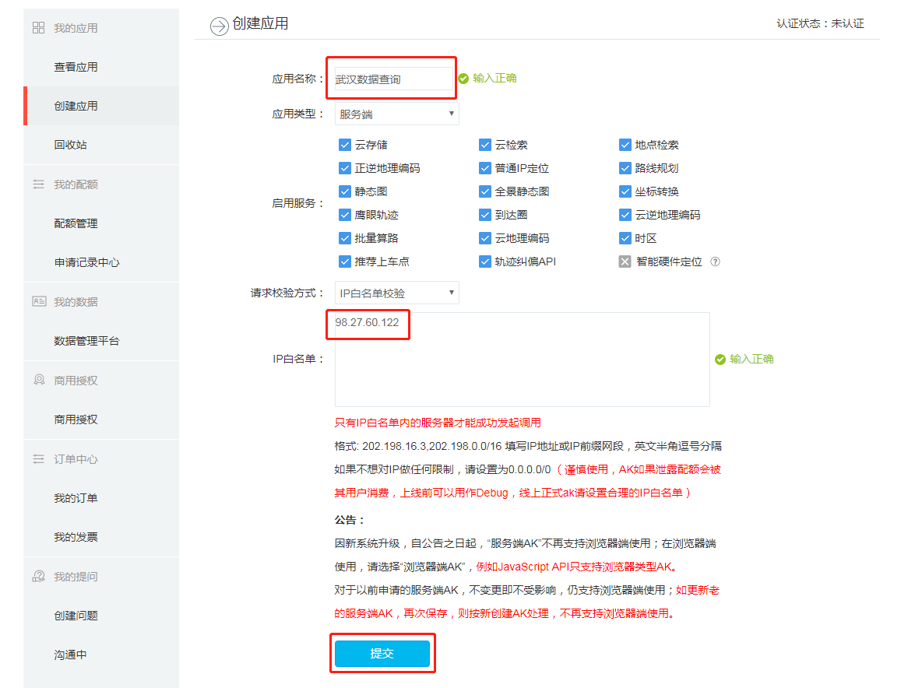

Introduction
Extracting data from un/semi/structured websites is becoming increasingly common place. Since data is collected, modified and refined continuously, it is increasingly useful to both serve them via web protocols rather than flat files that are downloaded. Furthermore, much of spatial data collection has become private, which also means that firms have stronger incentives to protect their datasets and curate what is available to the others. In other instances, the user or the analyst requires only a small section of the dataset. In these instances and others, data is served by a web-based protocol. Harvesting data usually takes the form of automating the process of sending requests to the webserver and parsing the output to extract relevant data for storage and analysis.
Legality
Different jurisdictions have different legal restrictions and permissions on web scraping. There are also end user agreements that prevent certain actions (storage, retrieval, replication etc.). Please make sure that you are aware of these before attempting to make a local copy of the data that might be privately owned.
In general, scraping requires automated and repeated requests to the server. As long as these requests are not a disruptive rate, it is unlikely that you will run afoul of legality. Local data storage and replication of services is an entirely different ball game. Please consult a lawyer.
Many public and government websites are also now serving up data using web protocols. It is, therefore, useful to learn how to parse the outputs of these requests. In some instances, private firms such as Google, Baidu, Instagram etc. also provide application programming interfaces (API) that serve data in a structured format. In these instances, subject to end user agreements, rate limits and daily quotas, restrictions on storage and transfer, it may be possible to access datasets that are otherwise unavailable.
An example using Baidu
Baidu is a technology service company that provides a number of services including maps and social networking. According to Wikipedia,
The name Baidu (百度) literally means “a hundred times”, or alternatively, “countless times”. It is a quote from the last line of Xin Qiji (辛弃疾)’s classical poem “Green Jade Table in The Lantern Festival” (青玉案·元夕) saying: “Having searched hundreds of times in the crowd, suddenly turning back, She is there in the dimmest candlelight.” (众里寻他千百度，蓦然回首，那人却在灯火阑珊处。)
In this post, we are going to query Baidu for points of interest around Wuhan, China. This is similar to Google Places.
Setting up
In general, all API require registration and perusal of documentation, so that queries can be structured appropriately. In the case of Baidu, there are additional steps that are required so that the IP address of the computer that you are querying from is not blacklisted for abuse. Please see the documentation
Acquiring API keys.
Every request to API requires a key so the website can control the how much and who can access the information. To acquire a key we need to :
- Have a Baidu account. Register at https://passport.baidu.com/v2/?reg

Find your computer IP address. Preferably use ifconfig or ip138

Login your Baidu account and go to http://lbsyun.baidu.com/apiconsole/key?application=key, click “创建应用” to create a new application. Use the IP address from the previous step to “IP白名单”, then submit the application. 
After getting back to the application management page, make a note of the api key. You will need to use it in your R code.

Scraping
There are There are a few steps to scrape and visualize information fro web queries. In this post, we will use Baidu API as a example to scrape the resturants around Huazhong Agricultural University (HZAU). For the moment, we will deal with structured data. Parsing unstructured data is for a different time.
The steps are:
- Intialise your R session
- Set the parameters of the query
- Send the query repreatedly to get all the results
- Cleaning and exporting the data
- Visualize the result
The two main packages, we are going to use for scraping the web is RCurl and rjson. Install them, if necessary and intialise them into the library. We will also use devtools package to install packages that are not on Comprehensive R Archive Network (CRAN), but on places like Github.
Curl is a command line tool that allows us to transfer data especially over the web. Rcurl is an interface for that tool. Because the result of the API query is formatted in JavaScript Object Notation (JSON), we use RJSON to parse it easily. JSON is lightweight data-interchange format.
##################### USE YOUR OWN KEY #########################
### aquire the key from: http://lbsyun.baidu.com/apiconsole/key?application=key
key = "_YOUR_KEY_HERE_"
library(rjson)
library(RCurl)
library(tidyverse) # We have seen this package before.
################################################################Parameters of the query
According to the API documentation, we need to set a number of parameters to send the request to API. First, we will use the “round buffer” API to search all the restraunts within 2km distance around Huazhong Agricultural University. You can extract the coordinates from http://api.map.baidu.com/lbsapi/getpoint/index.html by searching for 华中农业大学. Also Note the lat/long format, instead of the long/lat format we should be using. Pay attention to what the API requires.
location <- "30.48178,114.363708" #Latitude and Longitude as a string.
keyword <- "餐馆" %>% curlEscape() ### set the keyword to search for in this case, resturants
city <- "武汉" %>% curlEscape() ### set the city to search
radius <- 4000 ### set the search radius as 2000 meters
page_size <- 20 ### set the number of records in each page of the response
#It will be replaced by the actual value of the result once get the first response
placeIDSet = name = lat = lng = address = NULL ### set the initial value of the other parametersQuerying the API
Querying the API is simply passing the url string to the server. paste and paste0 are quite useful for constructing these queries
(searchURL <- paste("http://api.map.baidu.com/place/v2/search?query=",
keyword,
"&location=",location,
"&radius=",radius,
"&scope=",1,
"&page_num=", 1,
"&page_size=",page_size,
"®ion=",city,
"&output=json",
"&ak=",key,
sep=""))
# [1] "http://api.map.baidu.com/place/v2/search?query=%E9%A4%90%E9%A6%86&location=30.48178,114.363708&radius=4000&scope=1&page_num=1&page_size=20®ion=%E6%AD%A6%E6%B1%89&output=json&ak=mSWfSeru2jtlMtAutjy9Vv28XLC568N3"
result <- getURL(url = URLencode(searchURL),ssl.verifypeer = FALSE)
x <- fromJSON(result)
str(x, max.level = 2) # Setting max.level so that it won't overwhelm the page. Feel free to explore.
# List of 2
# $ status : num 210
# $ message: chr "APP IPæ ¡éªŒå¤±è´¥"Exercise
- Query Baidu for Parks around 1 km of Huazhong Agricultural University and print raw results
- Query Baidu for bus and train stations around Wuhan University and print the results
- How many day care centers are there in this area?
- Intepret these results
Repeated queries
Because many of the results are paginated, it is imperative that we query the server repeatedly to get all the results we want. In the following code, we query until all the results are retrieved. We use the while loop for this, though other loops might be more suitable for particular use cases.
page_num <- 0 ### set the starting page
total <- 20 ### the total number of records, initial value is 20,
while(page_num <= ceiling(total/page_size)-1){
### run the query to get the result from the server
searchURL <- paste("http://api.map.baidu.com/place/v2/search?query=",
keyword,
"&location=",location,
"&radius=",radius,
"&scope=",1,
"&page_num=",page_num,
"&page_size=",page_size,
"®ion=",city,
"&output=json",
"&ak=",key,
sep="")
result = getURL(url = searchURL,ssl.verifypeer = FALSE)
### transfer the result from json to a list format in R
x = fromJSON(result)
### get the number of total records from the result
total = x$total
### print the process
cat("Retrieving",page_num+1,"from total",ceiling(total/page_size),"pages ...\n")
page_num = page_num + 1
### extract the value from the result
# PLACEID
placeIDSet = c(placeIDSet,
unlist(lapply(X = x$results,FUN = function(x)return(x$uid))))
# Name of the place
name = c(name,
unlist(lapply(X = x$results,FUN = function(x)return(x$name))))
#latitude
lat = c(lat,
unlist(lapply(X = x$results,FUN = function(x)return(x$location$lat))))
#longitude
lng = c(lng,
unlist(lapply(X = x$results,FUN = function(x)return(x$location$lng))))
#address
address = c(address,
unlist(lapply(X = x$results,FUN = function(x)return(x$address))))
Sys.sleep(1) # Set this so that you do not bombard the server. The process stops for 1s. Change this to suit your purpose.
}
# Retrieving 1 from total pages ...
# Error in while (page_num <= ceiling(total/page_size) - 1) {: argument is of length zero
# save the extracted information as a dataframe
dat <- data.frame(name,lng,lat,address,placeIDSet)
nrow(dat)
# [1] 0Exercise
- The above is a very brittle code. If the server returns an error because of heavy volume, the loop fails. Use
tryCatchto trap errors and continue loop and keep track of which pages have returned errors. In particular use the status and message of the results to write more graceful code that will survive.
Cleaning and exporting the data
Baidu has its own projection system. To visualize the data, we need to transform the coordinates from BD09 coordinate system to the commonly used WGS84 system (epsg:4326). To achieve that, we need use a customized package on github. "devtools“ package is required here.
library(devtools)
install_github("waholulu/bd09towgs84")
library(bdtowgs)Then we can use its build-in function “bd09towgs84” to project the coordinates.
coord <- subset(dat, select = c("lng", "lat"))
# Error in `[.data.frame`(x, r, vars, drop = drop): undefined columns selected
transfer <- as.data.frame(t(apply(coord,1,bd09towgs84)))
# Error in apply(coord, 1, bd09towgs84): object 'coord' not found
dat$lng <- transfer$V1
# Error in eval(expr, envir, enclos): object 'transfer' not found
dat$lat <- transfer$V2
# Error in eval(expr, envir, enclos): object 'transfer' not foundThen the data can be saved as a csv file.
# save the information as an excel file
write_csv(dat, path= "search_results.csv")Visualise results
Now we can use leaflet to visuzalize the locations of the restaurants.
# Error in `[.data.frame`(dat, , c("lng", "lat", "name")): undefined columns selected
# Error in structure(list(options = options), leafletData = data): object 'locations_df' not found
# Error in eval(expr, envir, enclos): object 'm' not foundExercise
Instead of a buffer search, use a bounding box search to return the results for restaurants (“餐馆”). Use the bounds as
c(30.531539,114.357628,30.552129,114.385296)(SW-NE corner points). Display on a map.What happens you search for day care centers?
APIs for non-point data
In the above, we primarily used API to query point location information. There is no reason to think that this is limited to points. For example we can get routing information or travel time isoschornes or whatever API is serving that can be read.
To demonstrate this, we can plot Isochrones of every 2 min biking, around some random points in Wuhan. For this we use the Open Source Routing Library (OSRM), though any other API works as well (e.g. Google, Mapbox etc.). For this purposes, we are going to use the demo server for OSRM, though ideally you will set one up for your purposes. If you set one up for yourself, you can get other directions and travel such as walking, driving etc.
You should be careful using the OSRM demo server, it is not always very stable.
library(sf)
library(osrm)
# Ideally set these options up
options(osrm.server = "http://localhost:5000/")
options(osrm.profile = 'bike') #Change this for other modes. However, the demo server only returns car profile
randompoints <- matrix(c(114.346566,30.533282,
114.298273,30.381364,
114.347141,30.599453), ncol=2, byrow =TRUE) %>% data.frame()
names(randompoints) <- c('lng', 'lat')
randompoints$name <- c('pt1', 'pt2', 'pt3')
rt <- osrmRoute(src = randompoints[1,c('name', 'lng','lat')],
dst = randompoints[2,c('name','lng','lat')],
sp = TRUE) %>% st_as_sf()
# Error in UseMethod("st_as_sf"): no applicable method for 'st_as_sf' applied to an object of class "NULL"
rt %>% leaflet() %>%
addProviderTiles(providers$Stamen.TonerLines, group = "Basemap") %>%
addProviderTiles(providers$Stamen.TonerLite, group = "Basemap") %>%
addMarkers(data=randompoints[1:2,], ~lng, ~lat) %>%
addPolylines(weight =5, smoothFactor = .5, color='red')
# Error in polygonData.default(data): Don't know how to get path data from object of class functionOSRM is a convenience package that is wrapping the calls to the server and parsing the output into Spatial*. For example, the curl query in the backend looks like
http://router.project-osrm.org/route/v1/driving/114.346566,30.533282,114.298273,30.381364
iso <- list()
for (i in 1:nrow(randompoints)){
iso[[i]] <- osrmIsochrone(loc = randompoints[i,c('lng','lat')], breaks = seq(from = 0,to = 20, by = 2)) %>% st_as_sf()
}
# Error in (function (classes, fdef, mtable) : unable to find an inherited method for function 'coordinates' for signature '"NULL"'
iso <- do.call('rbind', iso)
Npal <- colorNumeric(
palette = "Reds", n = 5,
domain = iso$center
)
iso %>% leaflet() %>%
addProviderTiles(providers$Stamen.TonerLines, group = "Basemap") %>%
addProviderTiles(providers$Stamen.TonerLite, group = "Basemap") %>%
addMarkers(data=randompoints, ~lng, ~lat) %>%
addPolygons(color = "#444444", weight = 1, smoothFactor = 0.5,
opacity = 1.0, fillOpacity = 0.5, fillColor = ~Npal(iso$center),
group = "Isochrone") %>%
addLegend("topleft", pal = Npal, values = ~iso$center,
title = "Biking Time (min)",opacity = 1
)
# Error in derivePolygons(data, lng, lat, missing(lng), missing(lat), "addPolygons"): Polygon data not found; please provide addPolygons with data and/or lng/lat argumentsUnstructured data
JSON files are well-structured. Therefore, it is relatively easy to parse them. If the files are unstructured, a lot of effort goes into figuring out different structures and searches that will yield the dataset that is necessary. In general, packages such as xml2 and rvest will help such tasks. This is left for a different day.
Conclusions
Reading data from server based APIs are no different from reading and parsing a local file. However, unlike local files that are well structured, and OS handling handling of low level functions of memory management and error recovery, we ought to be extra mindful of how errors might affect and break our code. Once the data is scraped, analysis proceeds in the usual fashion. However, because the data is not of specific vintage, reproducibility of research is a serious concern. You should note it and be able to provide archival of scraped data for others to use, subject to end use restrictions. In any case, currency of the data should be balanced with the archival mission of the organisation.
Acknowledgements
Parts of the code in this post is written by Yan Chen.